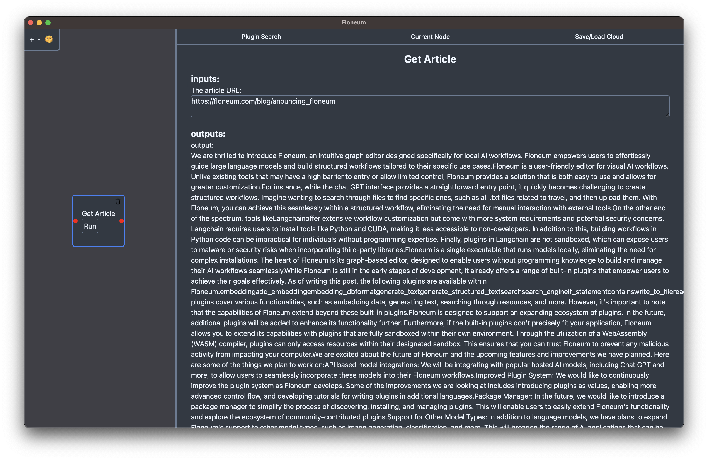
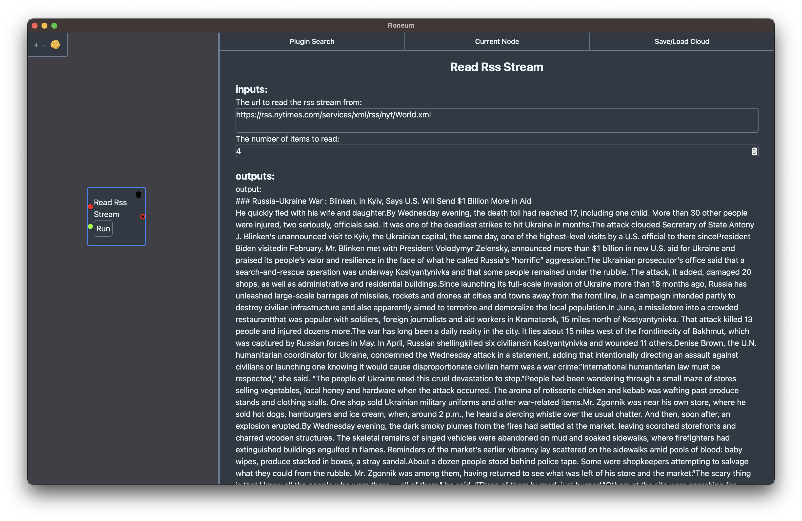
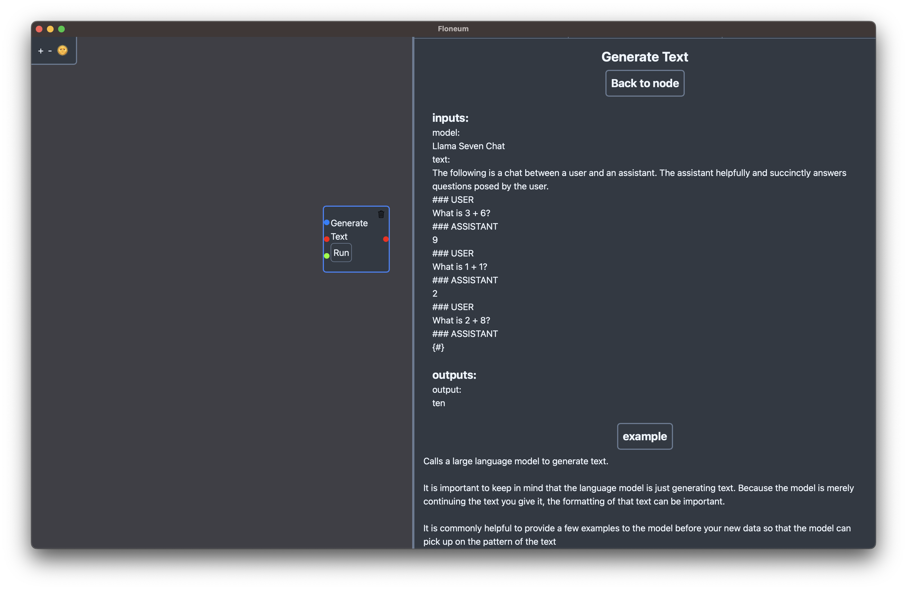
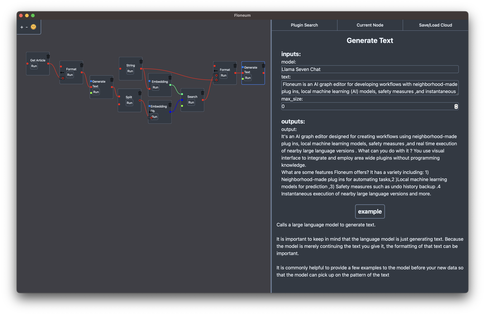

Announcing Floneum 0.2
Floneum 0.2 is here with improvements ranging from UI improvements and workflow sharing to web scraping and plugin distribution!
Floneum is a visual editor for AI workflows packaged as an easy to install application with no external dependencies. It makes it easy to build workflows that use large language workflows like Llama. The best part is, Floneum is fully open source and local. You control your data and your workflows.
What is new in 0.2?
Improved Web Scraping
When the MVP of Floneum was released, it only contained plugins for reading from wikipedia and getting the raw (unreadable) HTML from a website. In the 0.4 release, we added a new Get Article plugin that allows you to read an article from any URL automatically!

Reading Website Feeds
Many websites have a feed of recently published content in the form of an RSS stream. You can now use that RSS feed within Floneum to automatically gather a series of articles. For example, you can use the RSS feed from the new york times paper to get the latest world news.

Automated Browsing Plugins
Up until this point, Floneum plugins have been limited to reading the content websites initially provide without interacting with the page. Some websites require you to interact with the page to get interesting content. In the 0.2 release, we have added the ability to Floneum plugins can now control a browser (or headless browser). This makes it possible for workflows built with Floneum to access much more content from web pages and even create new content:
Sharing Workflows on the Cloud
Originally, Floneum workflows needed to be shared as a file copied from and to a specific directory. In the latest release of Floneum, you can just save a workflow to the cloud, get an unique workflow number, and load that workflow on any computer easily!
Plugin Examples
Floneum aims to make development of workflows simple. As part of that, clear and concise documentation is very important to us. As part of the new release, each plugin now has an example of the plugin's usage along side the documentation in the current node view. You can click on the example to get a quick overview of inputs and outputs for a specific node.

Rewritten UI!
As you may have noticed, the UI has been entirely rewritten for the 0.2 release. Previously Floneum was written in EGUI, an immediate mode GUI library for rust. We initially chose EGUI to take advantage of a node graph library written for EGUI, but we ran into issues with layouts in EGUI and limitations with the node graph library. Because of this, Floneum has switched to Dioxus with a custom node graph library. Along with this change comes a range of improvements to the UI enabled by the flexibly our own implementation offers. For example previously list types could only take individual elements now they can combine multiple lists and elements together. Another major improvement is moving the inputs and outputs of a node into a sidebar on the right. This makes it easier to see and edit large blocks of text that a node generates.
Package Manger
When Floneum was originally released, it looked for plugins within a specific github repo which made it difficult for community made plugins to be distributed. This makes publishing a plugin as easy as creating a github repo and adding a tag. The latest release will automatically find any repos with the tag floneum (and a build generated by the CLI).
Introducing the Floneum CLI
As part of the package manager, Floneum has a new CLI to make it easier to build and distribute plugins! You can install the CLI by installing rust and then running:
cargo install --git https://github.com/floneum/floneum floneum-cli
Or downloading the CLI from the release page.
Once you have the CLI installed, you can build your Floneum plugins by running:
floneum build
That's it! Just tag your github repo with floneum and your plugin will be available in Floneum!
Bonus: You can also clear the package cache with the CLI by running
floneum clearto get the latest plugins before the cache expires.
Keep Up to Date with Nightly Builds
If you want to keep up with the latest developments of Floneum, nightly builds are now created for every commit to the main branch. You can download the latest nightly build from the CI of the main branch:

Updates and discussions about development also happen on the Floneum Discord.
What can you build with Floneum?
While Floneum is still in early development, it is already possible to build a range of workflows with it. Here are some examples of workflows that can be built with the latest release of Floneum:
News feed summarization!

Combining multiple models to create an efficient question answering workflow sources relevant to your use case!

Automatic content creation with browser automation!
How do I get started?
To get started, just go to the downloads page, download the installer and create your first workflow (or try an example). That is it! No need to install python, or cuda!
If you want to learn more about Floneum, check out the user documentation or plugin developer documentation.
If you have any questions, feel free to join the Floneum Discord and ask away!